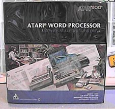

The Atari Word Processor

Long before Atari
introduced "AtariWriter", it famous wordprocessor on a cartridge.
Atari had come out with The Atari Word Processor. This program
had some very powerful and unique features and included a tutorial on cassette
tapes included with the package. The documentation was
quite extensive as well. You needed all the documentation and
the casettes because this wordprocessor was both feature rich and powerful.
(Hmmm, when using this package, it has a very professional look and feel
to it, perhaps Atari was rethinking its decision about the home market
and was perhaps rethinking the small business market?).
It had 80 column auto return mode on it as well as on editing with simulaneous
on-screen print preview and many other ahead of its time features.
Few people know about this product so we felt it was worth mentioning.